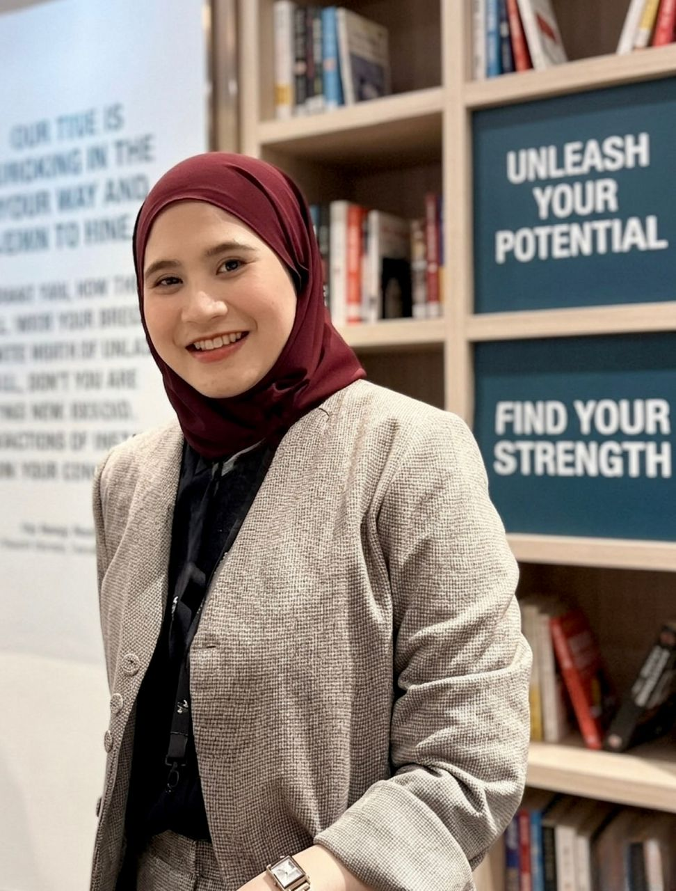
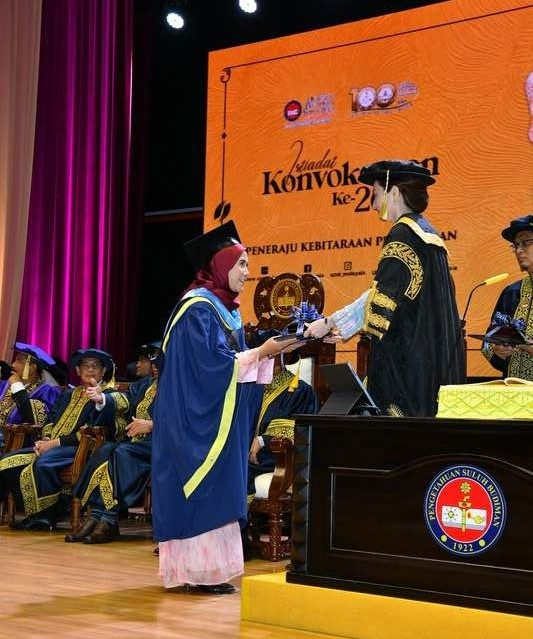
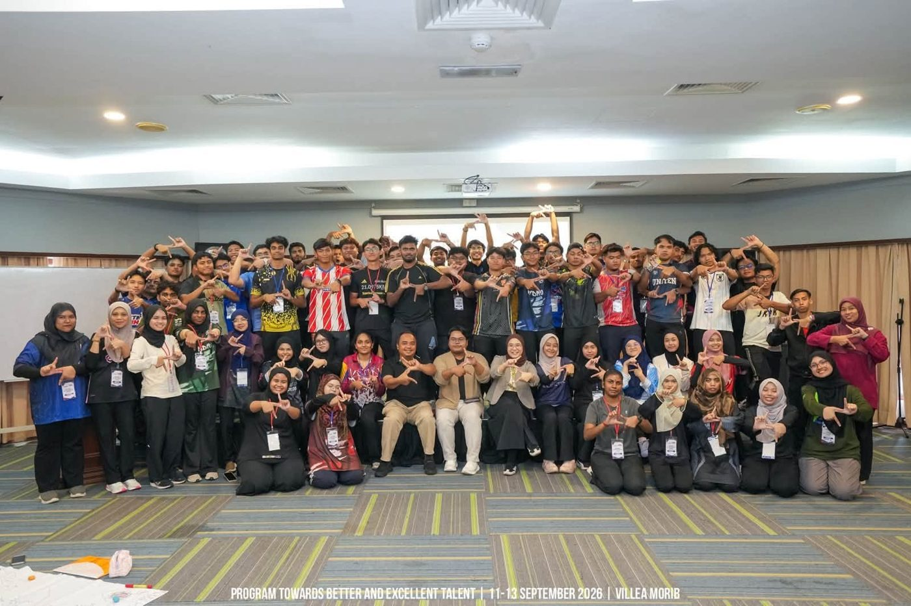
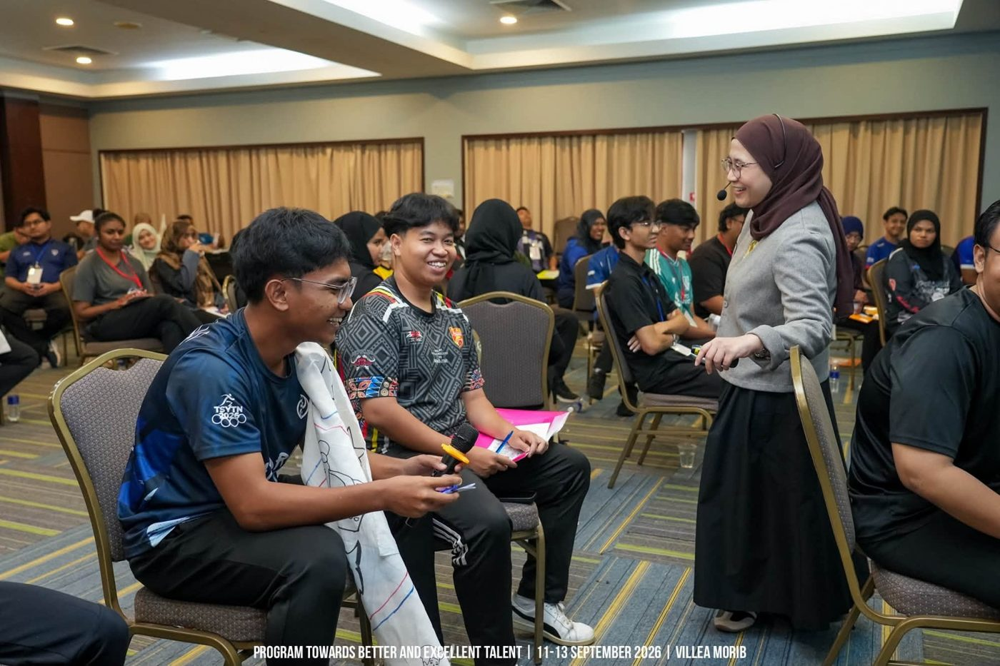
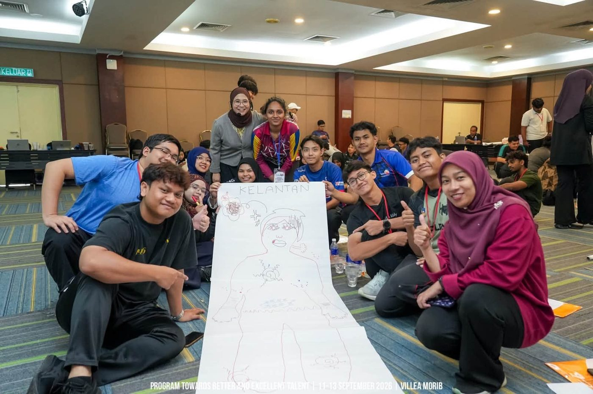
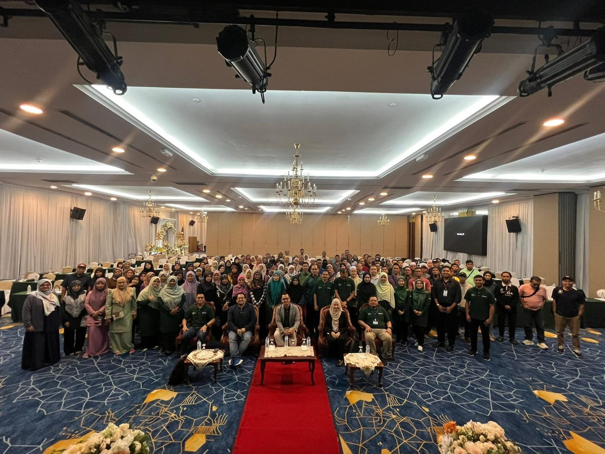
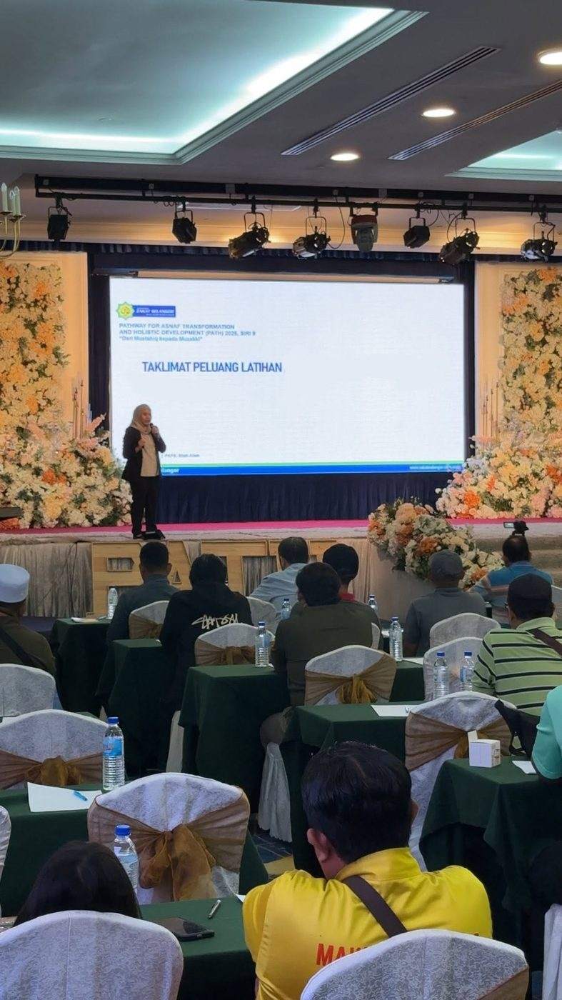
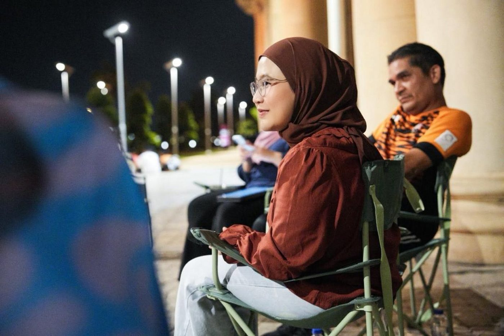
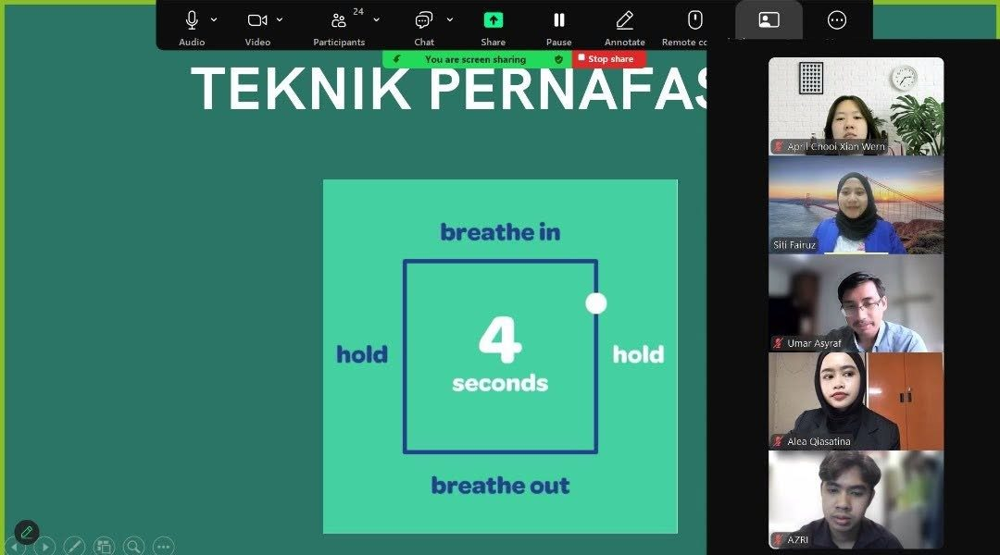

Trainer · Facilitator · Speaker
I am a psychology-trained trainer who helps students, young people and working adults understand themselves better, manage stress and emotions, and step up as leaders. Wellbeing · Motivation · Youth Leadership.

01Meet Your Trainer
A graduate of the Bachelor of Psychology (Hons) from Universiti Pendidikan Sultan Idris with a CGPA of 3.89, I received the Royal Education Award (Pingat Jaya Cemerlang) in 2024 and the Outstanding Graduate Award from Persatuan Siswazah Wanita Malaysia in 2025.
My experience spans the corporate, education and government sectors: as a Learning & Development professional at UOA Academy, a Perdana Fellow in the Office of the Minister of Education, and a Malaysian delegate to the Ship for Southeast Asian and Japanese Youth Programme (SSEAYP).
My sessions are warm, interactive and practical, grounded in psychology and real-life experience.

02Training Topics
Recognise the signs of stress, understand emotions and build simple self-care habits that protect mental wellbeing.
Turn setbacks such as disappointing results into a plan forward, rebuilding confidence, motivation and study direction.
Discover personal leadership style, speak with confidence and lead teams and programmes that create real impact.
Raise awareness of mental health and healthy technology use, including gadget dependency among children and teens.
Build self-awareness, a growth mindset and the soft skills needed to move confidently from study into work.
03Track Record
| Year | Session and organiser | Participants |
|---|---|---|
| Sep 2026 | Stress and Emotion Management Workshop, Program Towards Better and Excellent TalentYayasan Tenaga Nasional Berhad (YTN) · Villea Morib | 60 |
| 2026 | Port Healing: Stress and Emotional Awareness, National Sports DayBukit Bintang District Youth and Sports Office (JBSN) · Kuala Lumpur | 130 |
| 2026 | GenZ Meets Leaders 1.0, invited panellist with YB Dr. Radzi JidinOffice of the Member of Parliament for Putrajaya · Putrajaya | 30 |
| Jul 2025 | Career Transformation Talk for Asnaf, PATH 2025 Series 9Lembaga Zakat Selangor · Wisma PKPS, Shah Alam | 250 |
| May 2025 | Evolution Xpert: alumni sharing session on student life and success tips (online)Sekretariat Rakan Muda UPSI · Google Meet | 140 |
| Mar 2025 | PDT Module Development Workshop, International Youth Exchange ProgrammeNational Youth and Sports Department (JBSN), KBS · Bangi | — |
| 2025 | Physical and Mental Wellbeing, sharing session for the SSEAYP 2025 Malaysian delegation (online)International Integration Unit, JBSN, and KABESA · Online | 30 |
| Sep 2024 | Managing Emotions: Pre-Departure Training, ASEAN Trans Backpackers Programme 2024International Integration Unit, JBSN, and KABESA · Pusat Belia Antarabangsa Cheras | 30 |
| Jun 2024 | Smart Parenting: Managing Children’s Gadget Use and Building Parental ResiliencePersatuan Penduduk Ampang Jaya · Ampang Jaya | 300 |
| Jun 2024 | Understanding My Emotions, interactive session for primary school childrenSekolah Bimbingan Jalinan Kasih, Chow Kit · Kuala Lumpur | 100 |
| May 2024 | SPM Motivation: Preparing to Face the SPM ExaminationSMK Dato’ Ahmad Rasidi, Changkat Jering · Perak | 100 |
| 2024 | Changing Lives and Understanding Mental Illness, session with inmatesKajang Women’s Prison (Penjara Wanita Kajang) · Kajang | 50 |
| 2024 | Hope: Rebuilding Life After Setbacks, session with Sekolah Integriti studentsKajang Women’s Prison (Penjara Wanita Kajang) · Kajang | 20 |
| Podcast | Podcast panellist: Understanding Paedophilia and Protecting Children (Spotify and Apple Podcasts)UiTM Shah Alam students · Shah Alam | — |
04Featured Sessions
A stress and emotion management session for 60 YTN scholarship recipients, combining interactive discussion with a group body-mapping reflection on how stress and emotions show up in the body.



An invited talk on career transformation and training opportunities for around 250 asnaf participants under the Pathway for Asnaf Transformation and Holistic Development (PATH) programme, themed “Dari Mustahiq kepada Muzakki”.


05In Action


06Professional Experience
07Education & Recognition
Universiti Pendidikan Sultan Idris · CGPA 3.89 · Dean's List
Anugerah Pelajaran DiRaja – Pingat Jaya Cemerlang, UPSI Convocation
Persatuan Siswazah Wanita Malaysia (PSWM)
Ship for Southeast Asian and Japanese Youth Programme
"The Longest Non-Stop Public Speaking – 62 Hours", 300 participants
Regional Conference on Student Activism, UTP
Felo Perdana, Ministry of Education Malaysia
Silver Category, MAPUM
08Invite
To help me prepare a session that fits your needs, please share: